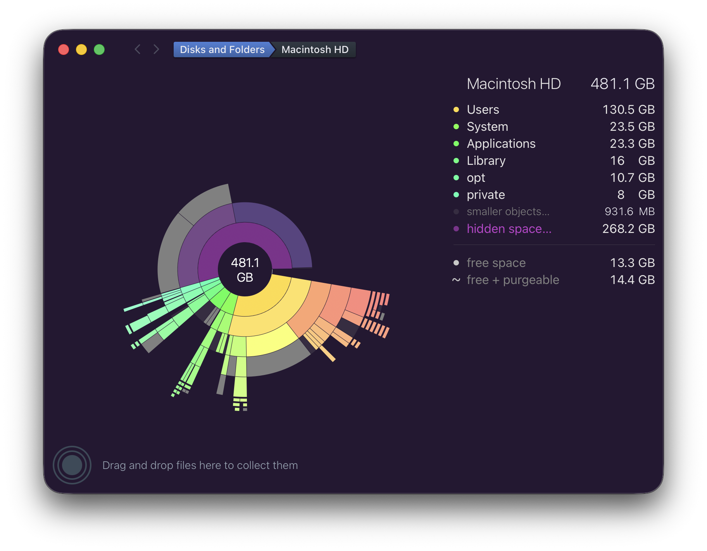

Thanks, Daisy Disk

Recently I've been beguiled by my local disk being almost full. This is on my every day Mac running Tahoe 26.2.
The tool I turn to to debug space issues is Daisy Disk. It's a great tool that I've used for years. In this case it showed the problem, but wasn't able to fix it.
Not have any success through the normal means, I wrote the developer of Daisy Disk, Oleg. They explained the problem and suggested a workaround. It worked like a champ! I included the explanation below and screenshots showing before and after.
I want to say thanks to Oleg for their help! And this is a nice opportunity to say thank you to indie developers in general who are often so helpful sharing their expertise.
Oleg's explanation:
This error has recently been reported by a few other users as well, and our investigation shows that it's caused by a new bug in macOS, introduced in one of its recent updates. (It didn't happen before). The symptom is exactly like in your case - a Time Machine snapshot becomes damaged for unknown reason, and it cannot be deleted in the normal way - not only in DaisyDisk, but also not in Terminal, using the tmutil command-line tool. Moreover, the tmutil tool doesn't even list the damaged snapshot. It becomes almost entirely lost, while it still consumes disk space.
We have found the following workaround solution. Please launch the system's Disk Utility (/Applications/Utilities/Disk Utility.app) and in the left sidebar, select your data volume, likely called "Macintosh HD - Data". Note that there will also be another volume called "Macintosh HD" (without "Data"), but you should select specifically "Macintosh HD - Data". Then select the View \> Show APFS Snapshots menu command. In the lower part of the window, you will see the damaged Time Machine snapshot in the list. Please select it and then click the "-" (minus) button at the bottom to delete it.
And screenshots showing the before and after. Note the two broken snapshots in the list below.

After